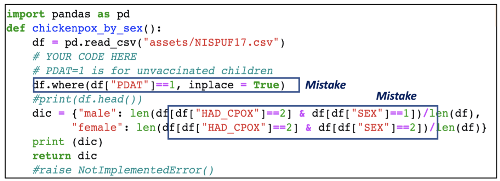
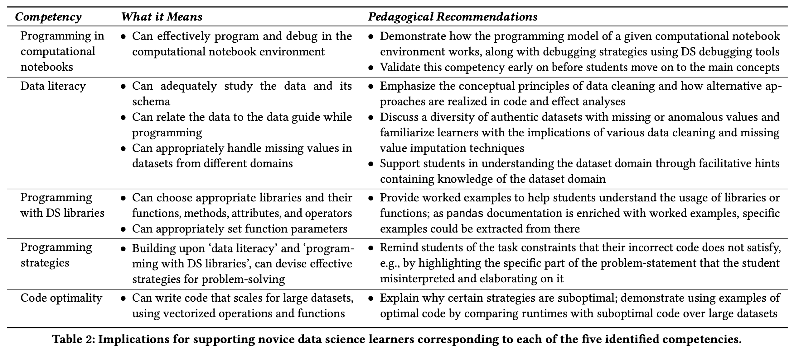

Associate Teaching Professor
Carnegie Mellon University
This post is a summary of our SIGCSE'24 paper, "Investigating Student Mistakes in Introductory Data Science Programming". See the paper for more details. Thanks to Anjali Singh for leading this collaboration between Microsoft and University of Michigan!
What kind of problems do students face in introductory data science courses?
This has been studied many times over in the context of traditional CS1 and CS2 courses, but not for DS1 courses. Towards this, we analyzed students' code submissions in a data science course at the University of Michigan. We randomly sampled from 542 notebook submissions by 151 students and qualitatively analyzed them to understand the mistakes and inappropriate strategies.
We categorized the mistakes as:
A logical error is when the program behaves differently than expected, though it does not throw an error. One cause for this is misunderstanding the data, such as using the wrong columns or values. For example, a student used the column PDAT instead of P_NUMVRC which contradicts what their code comment says. Another example, a student incorrectly used male and female instead of 1 and 2 when filtering.
Another cause is misunderstanding the problem statement. For example, rounding values when the actual value is expected, dividing by the wrong value, or incorrectly ordering dictionary keys. Students also made mistakes handling missing values. For example, when computing a correlation between two columns, a student replaced all missing values in both columns with 0.
These semantic mistakes occurred when students used the incorrect function or operator, which may or may not throw a runtime error. For example, students used where() to select rows that meet some criteria without understanding the effect on rows that do not meet the criteria. Another common mistake was to use the full dataframe where they intended to use an intermediate variable or filtered rows. Other semantic mistakes include using bitwise operators on dataframes, invalid operations on dataframe slices, and using groupby() incorrectly.
Some students wrote inefficient code that may not scale or violates best practices. For example, students used for loops to iterate over dataframe rows to count the number of rows that satisfy some condition. Instead, vectorized operations should be used (e.g., merge(), join(), groupby(), and map()). Although these functions were taught in the course, students were not penalized for writing suboptimal code. It is likely that students are misapplying their prior knowledge of iteration, perhaps from another programming course, to data science programming.
Other mistakes were caused by misconceptions about Python or Jupyter notebooks. These include incorrectly specifying paths, using incorrect syntax, not importing libraries, mismatches between cells, out of order cells, and scoping issues. For example, students attempted to use variables that were defined in a different function or in a later cell. Prior studies also found that students struggle to understand how notebooks work.
A list of competencies for introductory data science courses emerged from our study, along with recommendations for how instructors can better support them. These include: programming in computational notebooks, data literacy, programming with data science libraries, programming strategies, and code optimality.
For many students, it is the first time that they are working with a large dataset. Teaching them data literacy and how to understand the dataset domain is of huge importance and is unlike a typical CS1 course. Another major difference between CS1 and DS1, is that data science courses immediately teach libraries (rather than just core programming language constructs) to accomplish tasks.
As part of this project (though only briefly described in the paper), we deployed an LLM-powered AI tutor to a large data science course. It aimed to help students not just with code correctness, but also domain knowledge, data literacy, and data science best practices. The system used not only the student's code, but also the program output, AST information, characteristics of the dataframe, and code optimality metrics. The system also used previously graded assignments from past semesters of the course to provide better feedback.
There is still a lot more research needed to understand the challenges of teaching and learning data science. Full details can be found in our SIGCSE'24 paper: Investigating Student Mistakes in Introductory Data Science Programming.
If you liked this post, check out: